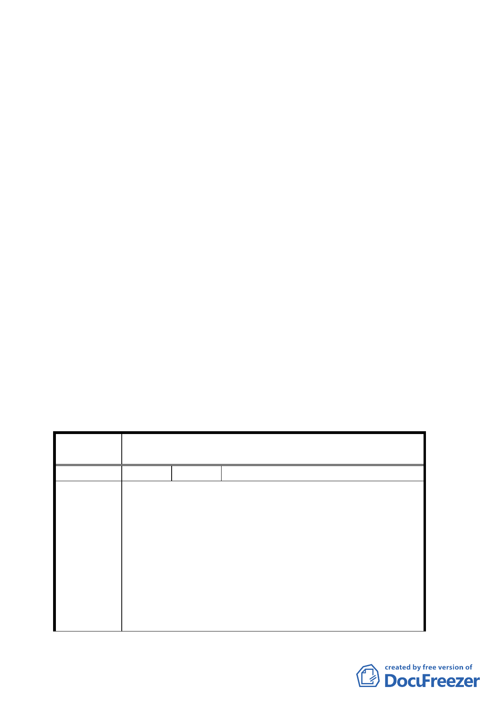

四、計畫範圍：詳計畫圖所示。
五、變更理由及內容：詳計畫說明書所示。
六、公民或團體陳情意見：（詳綜理表）
七、本案經九十三年七月二十九日本會第五三二次委員會議及
九十三年九月三日第五三三次委員會議決議，組成專案小
組請黃委員書禮擔任召集人，經九十三年十一月十一日及
九十四年四月十四日專案小組審查會議結論，請都市發展
局修正書圖提委員會議審議。經市府都市發展局以九十四
年八月三日北市都綜字第 09432806100 號函送「變更臺北
市文山區木柵路五段附近地區主要計畫案」修正書暨委員
意見辦理情形，提會審議。
決議：
一、本案原則同意，惟部份公園用地請發展局酌予調整，併
同細部計畫修正部份，提下次委員會議審議確定。
二、公民或團體所提意見審決如后附綜理表。
臺北市都市計畫委員會公民團體所提意見綜理表
案 名 變更臺北市文山區木柵路五段附近地區主要計畫案
編 號 １ 陳情人 高賜福
1. 平均坡度 30%以上之土地完全排除在外，此方案似與
鈞府 92 年一月底及 4 月 11 日針對本區土地之發展構想
及開發方式與當地居民進行二次說明會之結果並不相
同。鈞府原構想在維護自然生態環境考量下，將坡度
陳情理由
30%以上之土地規劃為戶外休閒健身使用為主〈如：攀
岩場、漆彈運動場、公園……等〉但經閱覽 鈞府之變
更計畫書後，發覺並未列入此計畫案，深感此計畫案對
當地居民〈持有坡度 30%以上土地者〉實欠公允。
2. 該地區年久受 鈞府大規模開發公墓、垃圾場、焚化爐
等，致使該地區土地價格一落千丈，地主、居民損失慘
四